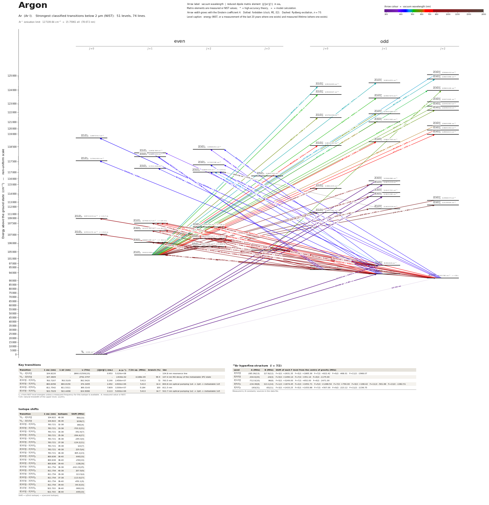

Argon energy level diagram
Energy levels and transitions of neutral argon (Ar I): the 74 strongest classified lines below 2 µm from the NIST Atomic Spectra Database and the 51 levels they connect, each line with its vacuum wavelength, frequency and, for 73 of them, the reduced dipole matrix element derived from the NIST transition rate. Measured lifetimes, transition rates, hyperfine constants and isotope shifts from the literature are included, each with its citation.
Hover a line or a level to isolate it, click to keep it selected. Scroll to zoom, drag to move.

Download: diagram (PDF) diagram (SVG) transitions (CSV) levels (CSV) source code

Key transitions of argon
| Transition | λ vac (nm) | λ air (nm) | ν (THz) | |⟨J‖er‖J′⟩| (ea₀) | A (s⁻¹) | Γ/2π up. (MHz) | branch (%) | Use |
|---|---|---|---|---|---|---|---|---|
| 1S0 – 2[1/2]°1 | 104.8220 | – | 2860.01500(10) | 0.953 | 5.320e+08 | – | – | 104.8 nm resonance line |
| 1S0 – 2[3/2]°2 | 107.3609 | – | 2792.3797 | – | 2.630e-02 | 4.188e-09 | 99.9 | 107.4 nm M2 decay of the metastable 3P2 state |
| 2[3/2]°2 – 2[3/2]2 | 763.7207 | 763.5105 | 392.5420 | 5.190 | 2.450e+07 | 5.413 | 72 | 763.5 nm |
| 2[3/2]°1 – 2[3/2]2 | 800.8358 | 800.6156 | 374.3495 | 2.492 | 4.900e+06 | 5.413 | 14.4 | 800.8 nm optical pumping 1s4 -> 2p6 -> metastable 1s5 |
| 2[3/2]°2 – 2[5/2]3 | 811.7542 | 811.5311 | 369.3143 | 7.809 | 3.300e+07 | 5.184 | 100 | 811.5 nm |
| 2[1/2]°1 – 2[3/2]2 | 922.7029 | 922.4498 | 324.9068 | 3.113 | 5.000e+06 | 5.413 | 14.7 | 922.7 nm optical pumping 1s2 -> 2p6 -> metastable 1s5 |
λ, ν from NIST level energies unless a measured frequency for this isotope is available. A: measured value or NIST. Γ/2π: natural linewidth of the upper level, 1/(2πτ).
39Ar hyperfine structure (I = 7/2)
| Level | A (MHz) | B (MHz) | Shift of each F level from the centre of gravity (MHz) |
|---|---|---|---|
| 2[3/2]°2 | -285.36(13) | 117.8(12) | F=3/2: +2631.35 F=5/2: +1865.36 F=7/2: +822.42 F=9/2: -468.01 F=11/2: -1968.07 |
| 2[3/2]°1 | -334.0(20) | -24(3) | F=5/2: +1490.14 F=7/2: +351.14 F=9/2: -1175.00 |
| 2[1/2]°1 | -712.0(10) | 84(6) | F=5/2: +3249.00 F=7/2: +652.00 F=9/2: -2471.00 |
| 2[5/2]3 | -134.36(8) | 113.1(14) | F=1/2: +1874.45 F=3/2: +1652.71 F=5/2: +1288.54 F=7/2: +790.00 F=9/2: +168.42 F=11/2: -561.68 F=13/2: -1382.51 |
| 2[3/2]2 | -163(31) | -63(11) | F=3/2: +1433.25 F=5/2: +1053.88 F=7/2: +507.00 F=9/2: -223.12 F=11/2: -1156.75 |
Measured A, B constants; sources in the data file.
Isotope shifts
| Transition | λ vac (nm) | Isotopes | Shift (MHz) |
|---|---|---|---|
| 1S0 – 2[1/2]°1 | 104.822 | 40-38 | 550(10) |
| 1S0 – 2[1/2]°1 | 104.822 | 40-36 | 1036(7) |
| 2[3/2]°2 – 2[3/2]2 | 763.721 | 32-38 | -882(4) |
| 2[3/2]°2 – 2[3/2]2 | 763.721 | 33-38 | -703.2(21) |
| 2[3/2]°2 – 2[3/2]2 | 763.721 | 34-38 | -552.6(7) |
| 2[3/2]°2 – 2[3/2]2 | 763.721 | 35-38 | -394.4(27) |
| 2[3/2]°2 – 2[3/2]2 | 763.721 | 36-38 | -265.4(4) |
| 2[3/2]°2 – 2[3/2]2 | 763.721 | 37-38 | -124.2(11) |
| 2[3/2]°2 – 2[3/2]2 | 763.721 | 39-38 | 122(7) |
| 2[3/2]°2 – 2[3/2]2 | 763.721 | 40-38 | 229.5(4) |
| 2[3/2]°2 – 2[3/2]2 | 763.721 | 46-38 | 835.2(23) |
| 2[3/2]°1 – 2[3/2]2 | 800.836 | 36-40 | -640(10) |
| 2[3/2]°1 – 2[3/2]2 | 800.836 | 38-40 | -290(10) |
| 2[3/2]°1 – 2[3/2]2 | 800.836 | 39-40 | -128(16) |
| 2[3/2]°2 – 2[5/2]3 | 811.754 | 36-38 | -242.23(25) |
| 2[3/2]°2 – 2[5/2]3 | 811.754 | 40-38 | 207.9(9) |
| 2[3/2]°2 – 2[5/2]3 | 811.754 | 39-38 | 113.9(4) |
| 2[3/2]°2 – 2[5/2]3 | 811.754 | 37-38 | -113.0(27) |
| 2[3/2]°2 – 2[5/2]3 | 811.754 | 36-40 | -450.1(9) |
| 2[3/2]°2 – 2[5/2]3 | 811.754 | 39-40 | -94.0(10) |
| 2[1/2]°1 – 2[3/2]2 | 922.703 | 36-40 | -960(10) |
| 2[1/2]°1 – 2[3/2]2 | 922.703 | 38-40 | -445(10) |
Shift = ν(first isotope) − ν(second isotope).
Listed Ar transitions below 2 µm
| Lower level | Upper level | λ vacuum (nm) | λ air (nm) | ν (THz) | Type | |⟨J‖er‖J′⟩| (ea₀) | A (s⁻¹) | Branching (%) | Source of matrix element / A |
|---|---|---|---|---|---|---|---|---|---|
| 1S0 | 2[3/2]°1 | 86.6800 | – | 3458.6116 | E1 | 0.549 NIST | 3.130e+08 NIST | – | NIST ASD (accuracy C+) |
| 1S0 | 2[1/2]°1 | 86.9754 | – | 3446.8644 | E1 | 0.185 NIST | 3.500e+07 NIST | – | NIST ASD (accuracy C) |
| 1S0 | 2[3/2]°1 | 87.6058 | – | 3422.0629 | E1 | 0.518 NIST | 2.700e+08 NIST | – | NIST ASD (accuracy C+) |
| 1S0 | 2[3/2]°1 | 87.9947 | – | 3406.9392 | E1 | 0.279 NIST | 7.700e+07 NIST | – | NIST ASD (accuracy C) |
| 1S0 | 2[1/2]°1 | 104.8220 | – | 2860.0150 | E1 | 0.953 NIST | 5.320e+08 NIST | – | NIST ASD (accuracy AA) |
| 1S0 | 2[3/2]°1 | 106.6660 | – | 2810.5722 | E1 | 0.487 NIST | 1.320e+08 NIST | – | NIST ASD (accuracy A+) |
| 1S0 | 2[3/2]°2 | 107.3609 | – | 2792.3797 | M2 | – | 2.630e-02 measured | 99.9 | Katori & Shimizu, Phys. Rev. Lett. 70, 3545 (1993) (abstract) |
| 2[3/2]°2 | 2[1/2]1 | 395.0096 | 394.8979 | 758.9497 | E1 | 0.205 NIST | 4.600e+05 NIST | – | NIST ASD (accuracy B) |
| 2[3/2]°1 | 2[3/2]2 | 404.5561 | 404.4418 | 741.0406 | E1 | 0.232 NIST | 3.300e+05 NIST | – | NIST ASD (accuracy B) |
| 2[3/2]°2 | 2[3/2]2 | 415.9763 | 415.8591 | 720.6960 | E1 | 0.499 NIST | 1.400e+06 NIST | – | NIST ASD (accuracy B) |
| 2[1/2]°0 | 2[1/2]1 | 418.3062 | 418.1883 | 716.6818 | E1 | 0.246 NIST | 5.600e+05 NIST | – | NIST ASD (accuracy B) |
| 2[3/2]°2 | 2[5/2]2 | 419.1894 | 419.0713 | 715.1719 | E1 | 0.226 measured | 2.800e+05 measured | 4.29 | Wiese, Brault, Danzmann, Helbig, Kock, Phys. Rev. A 39, 2461 (1989), Table I, p. 2464 |
| 2[1/2]°0 | 2[3/2]1 | 419.2210 | 419.1029 | 715.1179 | E1 | 0.243 NIST | 5.400e+05 NIST | – | NIST ASD (accuracy C+) |
| 2[3/2]°1 | 2[1/2]0 | 419.9500 | 419.8317 | 713.8765 | E1 | 0.306 NIST | 2.570e+06 NIST | – | NIST ASD (accuracy B) |
| 2[3/2]°2 | 2[5/2]3 | 420.1858 | 420.0675 | 713.4759 | E1 | 0.499 NIST | 9.700e+05 NIST | – | NIST ASD (accuracy B+) |
| 2[1/2]°1 | 2[1/2]0 | 426.0561 | 425.9362 | 703.6456 | E1 | 0.390 NIST | 3.980e+06 NIST | – | NIST ASD (accuracy B+) |
| 2[3/2]°1 | 2[3/2]2 | 426.7487 | 426.6287 | 702.5034 | E1 | 0.244 NIST | 3.100e+05 NIST | – | NIST ASD (accuracy C+) |
| 2[3/2]°1 | 2[3/2]1 | 427.3371 | 427.2169 | 701.5362 | E1 | 0.304 NIST | 8.000e+05 NIST | – | NIST ASD (accuracy B) |
| 2[3/2]°1 | 2[5/2]2 | 430.1311 | 430.0101 | 696.9793 | E1 | 0.273 measured | 3.800e+05 measured | 5.82 | Wiese, Brault, Danzmann, Helbig, Kock, Phys. Rev. A 39, 2461 (1989), Table I, p. 2464 |
| 2[1/2]°1 | 2[3/2]2 | 433.4780 | 433.3561 | 691.5979 | E1 | 0.339 NIST | 5.700e+05 NIST | – | NIST ASD (accuracy B+) |
| 2[1/2]°1 | 2[5/2]2 | 462.9737 | 462.8441 | 647.5367 | E1 | 0.0985 measured | 3.960e+04 measured | 0.606 | Wiese, Brault, Danzmann, Helbig, Kock, Phys. Rev. A 39, 2461 (1989), Table I, p. 2464 |
| 2[1/2]1 | 2[3/2]°2 | 477.0006 | 476.8673 | 628.4949 | E1 | 0.445 measured | 7.400e+05 measured | – | de Regt, Tas, van der Mullen, van der Sijde, Schram, J. Quant. Spectrosc. Radiat. Transfe… |
| 2[1/2]1 | 2[3/2]°2 | 487.7623 | 487.6261 | 614.6282 | E1 | 0.462 measured | 7.460e+05 measured | – | de Regt, Tas, van der Mullen, van der Sijde, Schram, J. Quant. Spectrosc. Radiat. Transfe… |
| 2[1/2]1 | 2[1/2]°1 | 488.9312 | 488.7947 | 613.1588 | E1 | 0.474 NIST | 1.300e+06 NIST | – | NIST ASD (accuracy D) |
| 2[1/2]1 | 2[1/2]°0 | 489.6058 | 489.4691 | 612.3140 | E1 | 0.323 NIST | 1.800e+06 NIST | – | NIST ASD (accuracy D) |
| 2[1/2]1 | 2[3/2]°2 | 505.0219 | 504.8811 | 593.6227 | E1 | 0.382 NIST | 4.600e+05 NIST | – | NIST ASD (accuracy D) |
| 2[1/2]1 | 2[1/2]°0 | 515.2826 | 515.1390 | 581.8021 | E1 | 0.402 NIST | 2.390e+06 NIST | – | NIST ASD (accuracy C) |
| 2[1/2]1 | 2[1/2]°1 | 516.3722 | 516.2284 | 580.5743 | E1 | 0.622 NIST | 1.900e+06 NIST | – | NIST ASD (accuracy C) |
| 2[1/2]1 | 2[3/2]°2 | 518.9191 | 518.7746 | 577.7248 | E1 | 0.690 NIST | 1.380e+06 NIST | – | NIST ASD (accuracy C) |
| 2[5/2]3 | 2[3/2]°2 | 542.2858 | 542.1351 | 552.8311 | E1 | 0.537 measured | 7.330e+05 measured | – | de Regt, Tas, van der Mullen, van der Sijde, Schram, J. Quant. Spectrosc. Radiat. Transfe… |
| 2[1/2]1 | 2[3/2]°2 | 545.3167 | 545.1652 | 549.7585 | E1 | 0.434 NIST | 4.700e+05 NIST | – | NIST ASD (accuracy D+) |
| 2[1/2]1 | 2[3/2]°2 | 556.0245 | 555.8702 | 539.1713 | E1 | 0.776 NIST | 1.420e+06 NIST | – | NIST ASD (accuracy C) |
| 2[1/2]1 | 2[1/2]°1 | 560.8289 | 560.6733 | 534.5524 | E1 | 0.758 NIST | 2.200e+06 NIST | – | NIST ASD (accuracy C) |
| 2[1/2]1 | 2[1/2]°0 | 565.2272 | 565.0704 | 530.3928 | E1 | 0.534 NIST | 3.200e+06 NIST | – | NIST ASD (accuracy C) |
| 2[1/2]1 | 2[3/2]°1 | 591.3723 | 591.2085 | 506.9437 | E1 | 0.567 NIST | 1.050e+06 NIST | – | NIST ASD (accuracy C) |
| 2[1/2]1 | 2[3/2]°2 | 606.1050 | 605.9372 | 494.6213 | E1 | 0.480 NIST | 4.200e+05 NIST | – | NIST ASD (accuracy C) |
| 2[1/2]1 | 2[3/2]°2 | 641.8080 | 641.6307 | 467.1061 | E1 | 0.870 NIST | 1.160e+06 NIST | – | NIST ASD (accuracy C) |
| 2[1/2]1 | 2[3/2]°2 | 675.4697 | 675.2833 | 443.8281 | E1 | 1.212 NIST | 1.930e+06 NIST | – | NIST ASD (accuracy C) |
| 2[1/2]1 | 2[1/2]°1 | 687.3185 | 687.1289 | 436.1769 | E1 | 1.156 NIST | 2.780e+06 NIST | – | NIST ASD (accuracy C) |
| 2[1/2]1 | 2[1/2]°0 | 693.9578 | 693.7664 | 432.0039 | E1 | 0.713 NIST | 3.080e+06 NIST | – | NIST ASD (accuracy C) |
| 2[3/2]°2 | 2[1/2]1 | 696.7351 | 696.5430 | 430.2818 | E1 | 1.790 NIST | 6.400e+06 NIST | 18.1 | NIST ASD (accuracy B+) |
| 2[3/2]°2 | 2[3/2]2 | 706.9166 | 706.7217 | 424.0846 | E1 | 1.820 NIST | 3.800e+06 NIST | 11 | NIST ASD (accuracy B) |
| 2[3/2]°2 | 2[3/2]1 | 714.9011 | 714.7041 | 419.3481 | E1 | 0.584 NIST | 6.300e+05 NIST | 1.85 | NIST ASD (accuracy B) |
| 2[3/2]°1 | 2[1/2]1 | 727.4939 | 727.2935 | 412.0893 | E1 | 1.021 NIST | 1.830e+06 NIST | 5.18 | NIST ASD (accuracy B+) |
| 2[3/2]°1 | 2[3/2]2 | 738.6014 | 738.3980 | 405.8921 | E1 | 2.907 NIST | 8.500e+06 NIST | 24.6 | NIST ASD (accuracy B) |
| 2[1/2]°1 | 2[1/2]0 | 750.5934 | 750.3868 | 399.4072 | E1 | 3.065 NIST | 4.500e+07 NIST | 97.7 | NIST ASD (accuracy B) |
| 2[3/2]°1 | 2[1/2]0 | 751.6720 | 751.4651 | 398.8341 | E1 | 2.896 NIST | 4.000e+07 NIST | 97.6 | NIST ASD (accuracy B) |
| 2[3/2]°2 | 2[3/2]2 | 763.7207 | 763.5105 | 392.5420 | E1 | 5.190 NIST | 2.450e+07 NIST | 72 | NIST ASD (accuracy B) |
| 2[3/2]°2 | 2[3/2]1 | 772.5886 | 772.3760 | 388.0364 | E1 | 1.884 NIST | 5.200e+06 NIST | 15.7 | NIST ASD (accuracy B+) |
| 2[1/2]°0 | 2[1/2]1 | 772.6332 | 772.4207 | 388.0139 | E1 | 2.827 NIST | 1.170e+07 NIST | 33.1 | NIST ASD (accuracy B+) |
| 2[1/2]°0 | 2[3/2]1 | 795.0362 | 794.8176 | 377.0802 | E1 | 3.720 NIST | 1.860e+07 NIST | 54.5 | NIST ASD (accuracy B) |
| 2[3/2]°1 | 2[3/2]2 | 800.8358 | 800.6156 | 374.3495 | E1 | 2.492 NIST | 4.900e+06 NIST | 14.4 | NIST ASD (accuracy C+) |
| 2[3/2]°2 | 2[5/2]2 | 801.6990 | 801.4785 | 373.9464 | E1 | 3.439 NIST | 9.300e+06 NIST | 28.5 | NIST ASD (accuracy B) |
| 2[3/2]°1 | 2[3/2]1 | 810.5920 | 810.3692 | 369.8438 | E1 | 4.440 NIST | 2.500e+07 NIST | 75.5 | NIST ASD (accuracy B+) |
| 2[3/2]°2 | 2[5/2]3 | 811.7542 | 811.5311 | 369.3143 | E1 | 7.809 NIST | 3.300e+07 NIST | 100 | NIST ASD (accuracy B) |
| 2[1/2]°1 | 2[1/2]1 | 826.6793 | 826.4521 | 362.6466 | E1 | 3.577 NIST | 1.530e+07 NIST | 43.3 | NIST ASD (accuracy B+) |
| 2[1/2]°1 | 2[3/2]2 | 841.0519 | 840.8208 | 356.4494 | E1 | 5.722 NIST | 2.230e+07 NIST | 64.7 | NIST ASD (accuracy B+) |
| 2[3/2]°1 | 2[5/2]2 | 842.6962 | 842.4647 | 355.7539 | E1 | 5.635 NIST | 2.150e+07 NIST | 65.8 | NIST ASD (accuracy B+) |
| 2[1/2]°1 | 2[3/2]1 | 852.3782 | 852.1441 | 351.7129 | E1 | 3.570 NIST | 1.390e+07 NIST | 40.7 | NIST ASD (accuracy B) |
| 2[1/2]°0 | 2[3/2]1 | 867.0324 | 866.7943 | 345.7685 | E1 | 1.531 NIST | 2.430e+06 NIST | 7.34 | NIST ASD (accuracy B) |
| 2[3/2]°2 | 2[1/2]1 | 912.5471 | 912.2966 | 328.5227 | E1 | 4.611 NIST | 1.890e+07 NIST | 76.5 | NIST ASD (accuracy B) |
| 2[1/2]1 | 2[1/2]°1 | 919.7161 | 919.4638 | 325.9619 | E1 | 1.424 NIST | 1.760e+06 NIST | – | NIST ASD (accuracy C) |
| 2[1/2]°1 | 2[3/2]2 | 922.7029 | 922.4498 | 324.9068 | E1 | 3.113 NIST | 5.000e+06 NIST | 14.7 | NIST ASD (accuracy B) |
| 2[1/2]1 | 2[1/2]°0 | 929.4081 | 929.1531 | 322.5628 | E1 | 1.137 NIST | 3.260e+06 NIST | – | NIST ASD (accuracy C) |
| 2[1/2]°1 | 2[3/2]1 | 935.6785 | 935.4218 | 320.4012 | E1 | 1.134 NIST | 1.060e+06 NIST | 3.2 | NIST ASD (accuracy B) |
| 2[3/2]°1 | 2[1/2]1 | 966.0435 | 965.7786 | 310.3302 | E1 | 2.685 NIST | 5.400e+06 NIST | 21.9 | NIST ASD (accuracy B) |
| 2[1/2]°1 | 2[5/2]2 | 978.7185 | 978.4502 | 306.3112 | E1 | 1.844 NIST | 1.470e+06 NIST | 4.5 | NIST ASD (accuracy B) |
| 2[1/2]°0 | 2[1/2]1 | 1047.2922 | 1047.0053 | 286.2548 | E1 | 1.291 NIST | 9.800e+05 NIST | 3.97 | NIST ASD (accuracy C+) |
| 2[1/2]1 | 2[3/2]°1 | 1048.0905 | 1047.8034 | 286.0368 | E1 | 2.039 NIST | 2.440e+06 NIST | – | NIST ASD (accuracy C) |
| 2[1/2]1 | 2[3/2]°2 | 1067.6490 | 1067.3566 | 280.7968 | E1 | 3.836 NIST | 4.900e+06 NIST | – | NIST ASD (accuracy D) |
| 2[1/2]1 | 2[3/2]°2 | 1244.2725 | 1243.9321 | 240.9380 | E1 | 4.826 NIST | 4.900e+06 NIST | – | NIST ASD (accuracy D) |
| 2[1/2]1 | 2[1/2]°1 | 1296.0202 | 1295.6658 | 231.3177 | E1 | 4.884 NIST | 7.400e+06 NIST | – | NIST ASD (accuracy D) |
| 2[1/2]1 | 2[1/2]°0 | 1321.7605 | 1321.3991 | 226.8130 | E1 | 3.038 NIST | 8.100e+06 NIST | – | NIST ASD (accuracy D) |
| 2[1/2]°1 | 2[5/2]2 | 1930.0183 | 1929.4915 | 155.3314 | E1 | 0.473 measured | 1.260e+04 measured | 0.193 | Wiese, Brault, Danzmann, Helbig, Kock, Phys. Rev. A 39, 2461 (1989), Table I, p. 2464 |
Reduced dipole matrix elements follow the convention A = ω³|d|²/(3πε₀ħc³(2J′+1)), with J′ the upper level. Tags show where a number comes from: measured, NIST compilation, high-accuracy theory, or a model calculation.
Ar energy levels
| Level | Energy (cm⁻¹) | J | Parity | Lifetime | gJ | Hyperfine A (MHz) | Hyperfine B (MHz) | Lifetime source | Hyperfine source |
|---|---|---|---|---|---|---|---|---|---|
| 1S0 | 0.000 | 0 | even | stable | – | – | – | – | – |
| 2[3/2]°2 | 93143.760 | 2 | odd | 38 s measured | 1.506 | -285.36 | 117.8 | Katori & Shimizu, Phys. Rev. Lett. 70, 3545 (1993) (abstract) | Williams, Lu, Rudinger, Xu, Yokochi, Mueller, Phys. Rev. A 83, 012512 (2011) [arXiv:1012.… |
| 2[3/2]°1 | 93750.598 | 1 | odd | – | 1.404 | -334 | -24 | – | Traub, Roesler, Robertson, Cohen, J. Opt. Soc. Am. 57, 1452 (1967) [as quoted in Chu et a… |
| 2[1/2]°0 | 94553.665 | 0 | odd | 44.9 s theory | – | – | – | Small-Warren & Chiu, Phys. Rev. A 11, 1777 (1975) (abstract) | – |
| 2[1/2]°1 | 95399.828 | 1 | odd | – | 1.102 | -712 | 84 | – | Traub, Roesler, Robertson, Cohen, J. Opt. Soc. Am. 57, 1452 (1967) [as quoted in Chu et a… |
| 2[1/2]1 | 104102.099 | 1 | even | 40.5 ns measured | 1.985 | – | – | Quadfasel and Helbig (unpublished; laser-induced fluorescence, selective laser excitation… | – |
| 2[5/2]3 | 105462.760 | 3 | even | 30.7 ns measured | 1.338 | -134.36 | 113.1 | Quadfasel and Helbig (unpublished; laser-induced fluorescence, selective laser excitation… | Williams, Lu, Rudinger, Xu, Yokochi, Mueller, Phys. Rev. A 83, 012512 (2011) [arXiv:1012.… |
| 2[5/2]2 | 105617.270 | 2 | even | 30.6 ns measured | 1.112 | – | – | Quadfasel and Helbig (unpublished; laser-induced fluorescence, selective laser excitation… | – |
| 2[3/2]1 | 106087.260 | 1 | even | 30.2 ns measured | 0.838 | – | – | Quadfasel and Helbig (unpublished; laser-induced fluorescence, selective laser excitation… | – |
| 2[3/2]2 | 106237.552 | 2 | even | 29.4 ns measured | 1.305 | -163 | -63 | Quadfasel and Helbig (unpublished; laser-induced fluorescence, selective laser excitation… | Klein et al., Nucl. Phys. A 607, 1 (1996) [as quoted in Chu et al. (Ritterbusch, Lu), 'Op… |
| 2[1/2]0 | 107054.272 | 0 | even | 24.4 ns measured | – | – | – | Quadfasel and Helbig (unpublished; laser-induced fluorescence, selective laser excitation… | – |
| 2[3/2]1 | 107131.709 | 1 | even | 29.3 ns measured | 0.819 | – | – | Quadfasel and Helbig (unpublished; laser-induced fluorescence, selective laser excitation… | – |
| 2[3/2]2 | 107289.700 | 2 | even | 29 ns measured | 1.26 | – | – | Quadfasel and Helbig (unpublished; laser-induced fluorescence, selective laser excitation… | – |
| 2[1/2]1 | 107496.417 | 1 | even | 28.3 ns measured | 1.38 | – | – | Quadfasel and Helbig (unpublished; laser-induced fluorescence, selective laser excitation… | – |
| 2[1/2]0 | 108722.619 | 0 | even | 21.7 ns measured | – | – | – | Quadfasel and Helbig (unpublished; laser-induced fluorescence, selective laser excitation… | – |
| 2[1/2]°0 | 111667.766 | 0 | odd | – | – | – | – | – | – |
| 2[1/2]°1 | 111818.028 | 1 | odd | – | – | – | – | – | – |
| 2[3/2]°2 | 112138.924 | 2 | odd | – | – | – | – | – | – |
| 2[3/2]°2 | 113468.473 | 2 | odd | – | – | – | – | – | – |
| 2[3/2]°1 | 113643.260 | 1 | odd | – | – | – | – | – | – |
| 2[3/2]°1 | 114147.732 | 1 | odd | – | – | – | – | – | – |
| 2[1/2]°0 | 114861.635 | 0 | odd | – | – | – | – | – | – |
| 2[1/2]°1 | 114975.019 | 1 | odd | – | – | – | – | – | – |
| 2[3/2]°1 | 115366.866 | 1 | odd | – | – | – | – | – | – |
| 2[5/2]3 | 116942.754 | 3 | even | – | – | – | – | – | – |
| 2[5/2]2 | 116999.326 | 2 | even | 153 ns measured | 1.09 | – | – | Wiese, Brault, Danzmann, Helbig, Kock, Phys. Rev. A 39, 2461 (1989), Sec. III A (pp. 2463… | – |
| 2[3/2]1 | 117151.326 | 1 | even | – | 1.01 | – | – | – | – |
| 2[3/2]2 | 117183.590 | 2 | even | – | 1.42 | – | – | – | – |
| 2[1/2]0 | 117562.955 | 0 | even | – | – | – | – | – | – |
| 2[3/2]1 | 118407.430 | 1 | even | – | 0.61 | – | – | – | – |
| 2[1/2]1 | 118459.598 | 1 | even | – | 1.45 | – | – | – | – |
| 2[3/2]2 | 118469.051 | 2 | even | – | 1.18 | – | – | – | – |
| 2[1/2]°0 | 118512.197 | 0 | odd | – | – | – | – | – | – |
| 2[1/2]°1 | 118651.395 | 1 | odd | – | 1.467 | – | – | – | – |
| 2[1/2]0 | 118870.917 | 0 | even | – | – | – | – | – | – |
| 2[3/2]°2 | 118906.611 | 2 | odd | – | 1.437 | – | – | – | – |
| 2[3/2]°2 | 119683.082 | 2 | odd | – | 1.5 | – | – | – | – |
| 2[3/2]°2 | 120600.890 | 2 | odd | – | 1.057 | – | – | – | – |
| 2[3/2]°1 | 121011.920 | 1 | odd | – | – | – | – | – | – |
| 2[1/2]°0 | 121794.099 | 0 | odd | – | – | – | – | – | – |
| 2[1/2]°1 | 121932.848 | 1 | odd | – | – | – | – | – | – |
| 2[3/2]°2 | 122086.916 | 2 | odd | – | – | – | – | – | – |
| 2[3/2]°2 | 122440.067 | 2 | odd | – | – | – | – | – | – |
| 2[3/2]°2 | 123372.925 | 2 | odd | – | – | – | – | – | – |
| 2[1/2]°1 | 123467.973 | 1 | odd | – | – | – | – | – | – |
| 2[1/2]°0 | 123508.927 | 0 | odd | – | – | – | – | – | – |
| 2[3/2]°2 | 123903.220 | 2 | odd | – | – | – | – | – | – |
| 2[1/2]°0 | 124526.695 | 0 | odd | – | – | – | – | – | – |
| 2[1/2]°1 | 124554.874 | 1 | odd | – | – | – | – | – | – |
| 2[3/2]°2 | 124603.890 | 2 | odd | – | – | – | – | – | – |
| 2[3/2]°2 | 125066.432 | 2 | odd | – | – | – | – | – | – |
Ar⁺ ionisation limit 127109.84 cm⁻¹ = 15.75961 eV (78.672 nm)
Sources
- Katori & Shimizu, Phys. Rev. Lett. 70, 3545 (1993) (abstract)
- Klein et al., Nucl. Phys. A 607, 1 (1996) [as quoted in Chu et al. (Ritterbusch, Lu), 'Op…
- NIST ASD
- NIST ASD level energies
- Quadfasel and Helbig (unpublished; laser-induced fluorescence, selective laser excitation…
- Small-Warren & Chiu, Phys. Rev. A 11, 1777 (1975) (abstract)
- Traub, Roesler, Robertson, Cohen, J. Opt. Soc. Am. 57, 1452 (1967) [as quoted in Chu et a…
- Velchev, Hogervorst, Ubachs, J. Phys. B 32, L511 (1999)
- Wiese, Brault, Danzmann, Helbig, Kock, Phys. Rev. A 39, 2461 (1989), Sec. III A (pp. 2463…
- Wiese, Brault, Danzmann, Helbig, Kock, Phys. Rev. A 39, 2461 (1989), Table I, p. 2464
- Williams, Lu, Rudinger, Xu, Yokochi, Mueller, Phys. Rev. A 83, 012512 (2011) [arXiv:1012.…
- de Regt, Tas, van der Mullen, van der Sijde, Schram, J. Quant. Spectrosc. Radiat. Transfe…
Isotope-shift keys 'A-B' mean nu(A) - nu(B); heavier argon isotopes lie at higher frequency on 811.5 nm (Table III of Williams et al. is given relative to 38Ar: Delta nu(38,A') = nu(A') - nu(38)), while the 800.8 and 922.7 nm shifts of Chu et al. are printed relative to 40Ar. 39Ar and 37Ar are radioactive (ATTA tracers). Level energies are NIST ASD values from data/ar/levels.csv; Paschen names in the labels. Entries marked '(abstract)' were read on the publisher's abstract page only. Added 2026-10-01 (second pass): the 105 nm measurements of Velchev et al. are from 1999 (older than 20 years), so the NIST energy stays in use; isotope shifts of that line are printed as nu(40) - nu(A). Paschen-labelled lifetimes (Klose) were assigned to NIST levels by energy order. Added 2026-10-02 (third pass, papers opened in full): Wiese et al. 1989 (scanned PDF from the Max Planck repository; tables read from the page images), Klein et al. 1996 (CERN preprint scan), Welte's 2011 thesis, de Regt et al. 1996. Lifetimes of all ten 4p levels are second-hand (Quadfasel & Helbig unpublished, via Wiese Table II, no uncertainties printed). Isotope-shift entries of the 763.5 nm line carry the statistical error in 'unc' and the systematic one in 'unc_sys'. The rates A_s of the 5p[5/2]2 branches are R/tau from one paper, so tau x sum(A) = 1 by construction.
Atoms with measured data
- Lithium-632 levels, 85 lines
- Lithium-732 levels, 85 lines
- Beryllium-917 levels, 26 lines
- Sodium-2336 levels, 106 lines
- Magnesium-2418 levels, 61 lines
- Magnesium-2518 levels, 61 lines
- Potassium-3934 levels, 84 lines
- Potassium-4034 levels, 84 lines
- Potassium-4134 levels, 84 lines
- Calcium-4035 levels, 61 lines
- Calcium-4335 levels, 61 lines
- Rubidium-8536 levels, 94 lines
- Rubidium-8736 levels, 94 lines
- Strontium-8740 levels, 70 lines
- Strontium-8840 levels, 70 lines
- Caesium-13331 levels, 79 lines
- Barium-13744 levels, 89 lines
- Barium-13844 levels, 89 lines
- Dysprosium-16339 levels, 55 lines
- Dysprosium-16439 levels, 55 lines
- Ytterbium-17118 levels, 26 lines
- Ytterbium-17418 levels, 26 lines